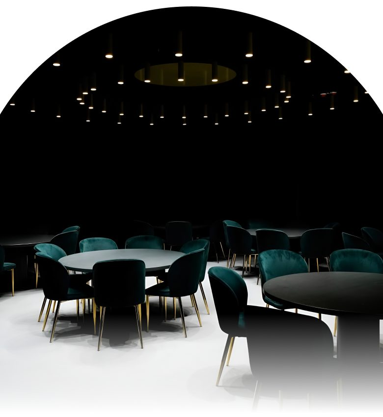

Юля & Сергій
Цього року мені виповнюється 25, і я хочу відсвяткувати цей вечір у колі людей, яких справді хочу бачити поруч.
Тому хочу запросити вас провести цей вечір разом зі мною — з шампанським, хорошою музикою, вечерею, танцями та просто приємною атмосферою.
Буду дуже рада бачити вас і разом відсвяткувати цей день.

Location
• Fami Chefs •
вул. Мельника, 18, LEOLAND (2 поверх)
Подивитися на картіTiming
- Welcome
зустріч гостей • шампанське • фото
(Приходьте вчасно — хочеться почати цей вечір разом) - Dinner
вечеря • DJ • розмови
- Birthday Cake
свічки • побажання • фото
- The End
Дякую, що були частиною цього вечора.
Dresscode
Здається, це саме той випадок, коли є привід трохи причепуритися. Обирайте свій найкращий cocktail look.
BlackGraphiteGrey
Дякую, що будете частиною цього вечора.
Мені дуже хочеться запам'ятати свої 25 саме так — красиво, голосно і разом із людьми, яких я люблю.